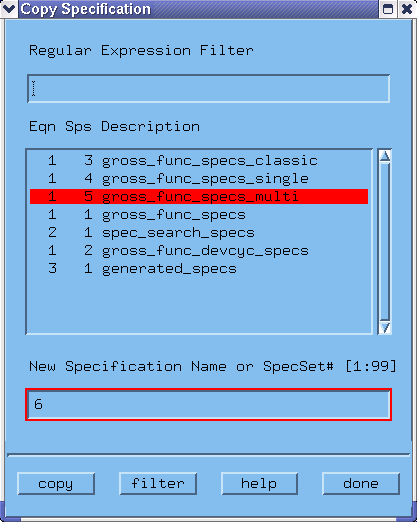

Copying Specification Sets
- Click Copy Specification Set in the Change pulldown menu.
A screen similar to that of the figure below appears.

- Highlight the specification set you want to copy and in the New Spec Set edit box, key in a value for the new set.
- Click copy to copy this specification set to the new destination.
- Repeat these last steps as often as required (for other specification sets), and click done when finished.
Functional changes
- Introduced before SmarTest 6.3.2